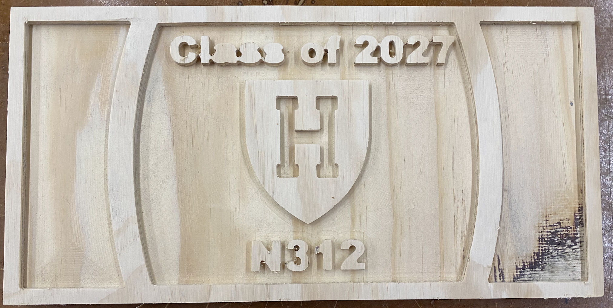
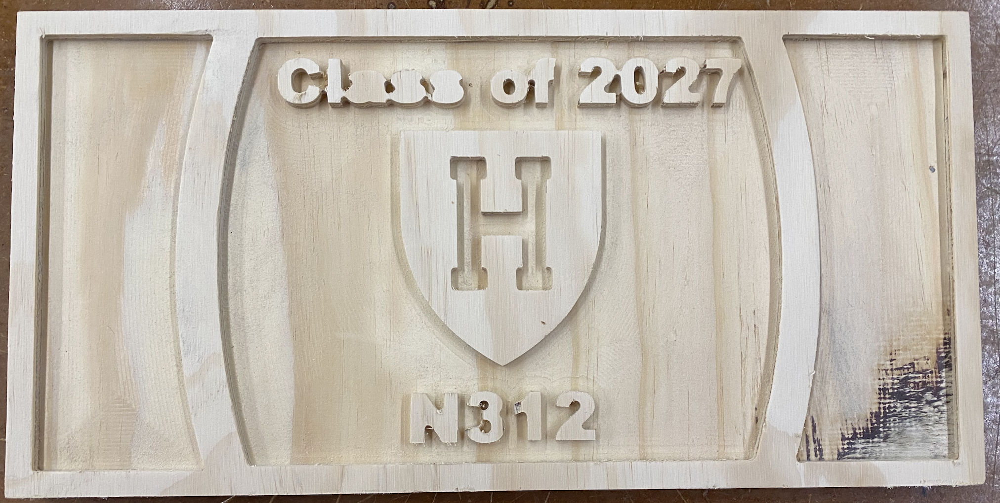

Use the CNC to make something.
ShopBot Table Router.
Fusion 360 Design
For this project, I decided I wanted to make a customized table for my dorm room using the ShopBot router. I wanted to make a top table design with the Harvard logo, my suite number, and my class year. The idea would be that this design would be held within a frame but could be flipped around (to reveal the flat bottom) so that the table could still be usable. I also wanted to make a pocket cut with the intials of everyone who lives in my suite on one of the table legs. I started off by making renderings in Fusion 360.
CNC Router
Initially, my pass depth was extremely low (~0.01 mm) so my first design took many hours to cut out. I had just used the pass depth settings that were set by the last person. Rookie mistake. I had never used a CNC before and thought this was normal. After doing some research, I realized that the pass depth could be set to 1/2 the width of the end mill. After changing my pass depth, the cutting went much more smoothly.
 

Above are my initial design (LEFT) and my second iteration (RIGHT) with a higher pass depth. The cut depth on the second design is much larger. As you can see, some of the features on my Fusion 360 rendering were too small to cut out so I will continue iterating. My thought is instead of writing out "Class of 2027," I will opt for the shorter, "'27."